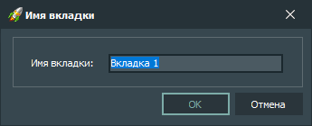

Элементы интерфейса:
-
Имя вкладки
Содержит имя вкладки, выбранной в главном окне приложения. Может быть изменено пользователем.
-
Кнопка «OK»
Подтверждает изменение имени выбранной вкладки.
-
Кнопка «Отмена»
Не подтверждает изменение имени выбранной вкладки.
Горячие клавиши:
-
Alt + F4
После нажатия этой комбинации клавиш окно с именем вкладки закрывается без применения изменений.
-
Enter
После нажатия этой клавиши окно с именем вкладки закрывается с применением изменений.
-
Esc
После нажатия этой клавиши окно с именем вкладки закрывается без применения изменений.